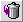

Folder adalah alat yang sangat berguna untuk menjaga email anda terorganisir dengan baik dan rapi. Ada lima (5) folder yang sudah ditetapkan, pengguna dapat membuat folder dalam jumlah yang tidak terbatas. Lima (5) folder yang sudah ditetapkan adalah:
 |
- Folder Email Baru
- Folder Simpan Pesan
- Folder Kirim Email
- Folder Simpan Catatan
- Folder Sampah
|
Folder Email Baru adalah juga Mailbox. Folder itu adalah dimana semua pesan yang sudah diterima didownload (kecuali sudah ditentukan secara khusus oleh pengguna. Lihat bagian
Mengatur Filter
untuk informasi lebih lanjut di dalam memfilter pesan). Sekali anda sudah membaca email tersebut, dan email tersebut sudah tidak dibutuhkan, mengapa anda masih membiarkan email tersebut berada dalam Folder Email Baru anda? Anda memiliki dua (2) pilihan: Anda dapat memindahkan email tersebut ke folder sampah, atau membuat folder baru. Jika anda memiliki pesan yang tidak berguna dan tidak dibutuhkan di kemudian hari, anda mungkin akan memindahkan email tersebut ke dalam folder sampah. Anda dapat melakukan salah satu dari dua (2) cara ini:
Anda dapat memilih kotak checkbox (
) dari pesan yang mungkin anda ingin pindahkan, dan klik tombol Kotak Sampah (
 ). Klik tombol "OK" ketika konfirmasi ditanyakan. Cara yang kedua adalah, sekali lagi pilih kotak checkbox, dan pilih folder "Sampah", di dalam menu pilihan di bagian sudut kanan atas, dan klik tombol "Pindah". Atau, jika anda ingin benar-benar menghapuskan email tersebut, pilih tombol --HAPUS-- di dalam menu pilihan. Maka email ini sudah tidak mungkin berada lagi di dalam folder tersebut. Tetapi, jika anda merasa bahwa anda mungkin memerlukan email ini di waktu yang akan datang sebagai referensi, anda dapat membuat folder untuk menyimpan pesan-pesan ini. Sebagai contoh, jika anda mendapatkan email yang berhubungan dengan bisnis anda, anda mungkin akan membuat folder dan menamakan folder folder tersebut "Kerja" untuk menyimpan semua email-email yang berhubungan dengan pekerjaan anda. Untuk membuat folder ikutilah langkah-langkah berikut ini:
- Klik tombol "Folder" pada toolbar (
 ) )
- Di bawah kotak "Nama Folder", ketik nama folder yang ingin anda buat.
- klik tombol "Tambah".
Silakan mereferensikan ke memindahkan dan meniru pesan untuk belajar bagaimana cara untuk menaruh pesan tersebut ke dalam folder baru anda.
Sekarang anda memiliki folder baru. Kini, ketika anda menerima beberapa email yang berhubungan dengan judul umum yang sama, anda dapat memindahkan pesan-pesan tersebut ke dalam folder untuk referensi di masa datang. Hal ini membuat anda lebih mudah di dalam menemukan pesan-pesan ini, karena pesan tersebut sudah diatur berdasarkan judul pesan. Bagaimanapun, mereka tidak memerlukannya untuk diatur berdasarkan dengan judul pesan. Anda dapat mengaturnya sesuai dengan keinginan anda -- berdasarkan pengirim, berdasarkan alamat yang umum, atau kriteria lain yang ingin anda gunakan, -- semuanya terserah pada anda bagamana anda ingin mengatur email anda tersebut. Silahkan membaca pada bagian
memindahkan dan meniru pesan
untuk belajar bagaimana cara untuk menaruh pesan tersebut ke dalam folder baru anda.
Anda juga dapat mengatur form folder anda di dalam daftar folder. Jika anda tidak berada di dalam area folder tersebut, klik tombol "Folder" (
) untuk melakukannya. Anda dapat melakukan aksi berikut ini:
| Aksi |
Yang Dilakukan |
| Tanda Sudah Dibaca | Menandai pesan di dalam folder tersebut sebagai pesan yang suda Dibaca. |
| Periksa Indeks | Memeriksa jumlah pesan di dalam folder. |
| Buat Kembali Indeks | Menghitung kembali jumlah pesan di dalam folder. |
| Mengganti Nama | Mengganti nama folder. |
| Hapus | Menghapus folder tersebut. |
Anda dapat menunjuk ke folder dan melihat isi pesan di dalamnya, dengan mengklik nama yang ada di dalam Daftar Folder. Anda juga dapat menunjuk folder dengan memilih nama dari menu pilihan pada bagian sudut kiri atas. |